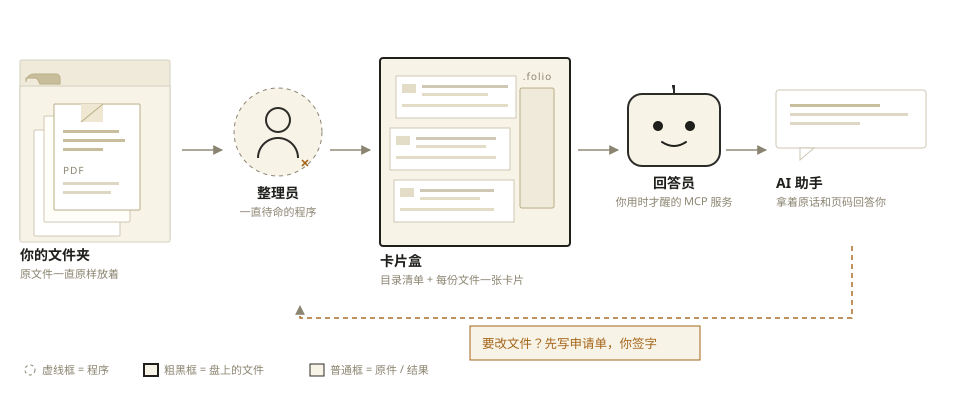
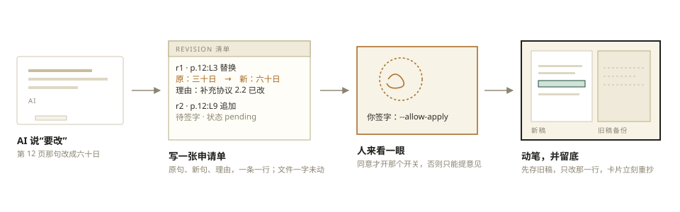
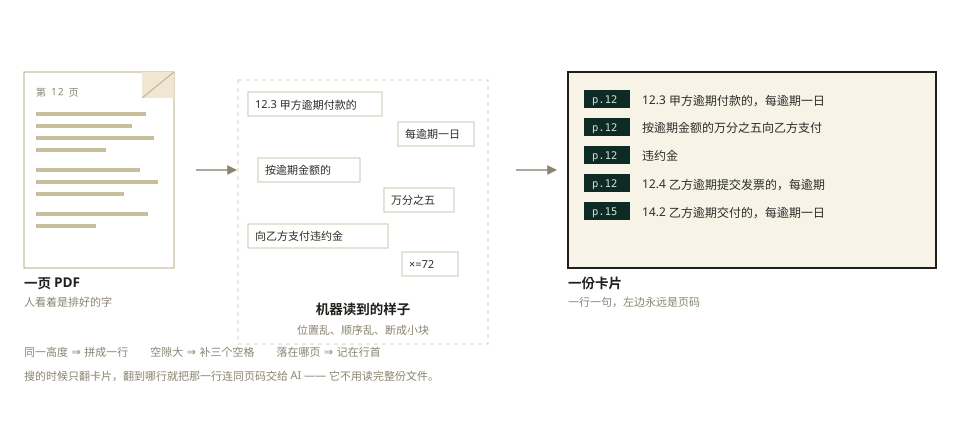

Folio · 大白话版
你把一个文件夹交给它，它会把里面的文件拆开、抄成一张张“目录卡片”，每张卡片上都写着这句话在第几页。 以后 AI 要查东西，翻卡片就行，不用把整份文件从头读到尾——又快、又省钱，而且答案能对着页码核对。
跟你整理纸质档案一个道理
30 页的合同、50 页的规范，全塞在文件夹里。要找一个数字，只能一页页翻。
把每一行话抄在一张小卡片上，卡片角上写清楚“第 12 页”。原件还原封不动放着。
问“违约金是多少”，几秒钟抽出那几张卡片，答案后面还带着页码，你能翻回去自己看。
同一道题，两种做法的“阅读量”
把 30 页合同从头读到尾
再问一次，还得再读一遍
读的时候眼睛会看漏
只读命中的那几行
需要细节时，只翻那一页
每条都带页码，错了能核
拆开 → 抄卡片 → 找卡片 → 改
把 PDF、Word、PPT、Excel 里的文字一行行取出来，并记住每行原来在第几页、第几张幻灯片、哪个工作表。
抄成一个个纯文本文件，每行前面写着页码。没有数据库、没有云服务，用记事本都能打开看。
按关键词把包含这些词的卡片挑出来，原话照抄，不改写、不总结，后面标着“第 12 页第 5 行”。
要改文件，先写一张修改申请单；你点头了才动笔，动笔前先留一份旧稿。改完目录卡片立刻更新。
翻开就能看懂，不需要任何软件
合同A_主合同 · 第 12 页那一部分 第12页 12.3 甲方逾期付款的，每逾期一日按逾期金额的万分之五向乙方支付违约金 第12页 12.4 乙方逾期提交发票的，每逾期一日按对应金额的万分之三向甲方支付违约金 第15页 14.2 乙方逾期交付的，每逾期一日按合同总价款的万分之三支付违约金 付款条款_内部说明 · 第 3 段那一部分 第3段 三、付款方式：合同签订后 30 日内支付首款，验收后 15 日内支付尾款。
一张图看完：谁在看、谁在抄、谁在答


机器读到的是一堆碎片，得先拼起来

就是一个普通文件夹，记事本能打开
.folio/
卡片盒，放在你能指定任意位置
manifest.json
目录清单：有哪些文件、几页、几行、有没有表格
index/
一份文件一张卡片，文件名和原文件同名
revisions/ · backup/
修改申请单，和每次动笔前留的旧稿
一个负责整理，一个负责回答
你往文件夹里加文件、改文件、删文件，它自己发现并更新卡片。你不用管它。
只负责翻卡片回答“有什么、搜什么、翻哪页”。它不碰原文件，也不会一上来就重新解析一遍。
整理员动卡片时会先说一句“我在改”，回答员看到就等一会儿——等不到就先拿旧的，不会读到抄了一半的卡片。
默认情况下，回答员只能提意见，不能动文件。要真的写，启动时得手动打开开关，这是故意的。
以合同里“万分之五”那句为例
不能改的，它只出意见
| 文件类型 | 页码长这样 | 为什么 | 能直接改吗 |
|---|---|---|---|
| 第 12 页 | PDF 里没有“第几行”这回事，硬改会把版式弄坏 | 不能，只出意见 | |
| Word（.docx） | 第 37 段 | 它能定位到段落，但只能换掉一段里的字，不能增删段落 | 能，只改文字 |
| PPT | 第 6 张幻灯片 | 幻灯片是一堆打包文件，按“行”改会切错地方 | 不能，只出意见 |
| Excel | 工作表“台账” | 同上，表格文件也是打包格式 | 不能，只出意见 |
| 网页（.html） | 第 N 段 | 卡片上的文字是从网页里抽出来的，跟原文行号对不上 | 不能，只出意见 |
| 纯文本（txt / md / csv） | 第 N 段 | 一行就是一行，行号完全对得上 | 能，改 / 加 / 删都行 |
这几条是故意的，不是没做完